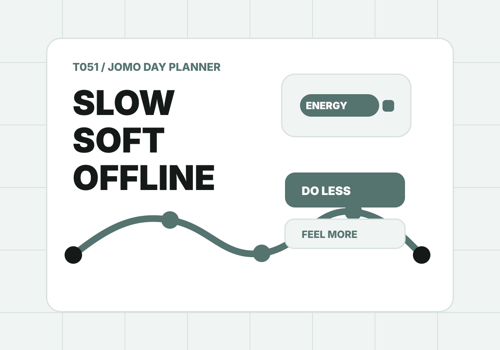

T051 / JOMO day planner
今天少做一點，也可以是一趟很好的旅行。
JOMO 不是放棄，而是把注意力還給自己。輸入你現在的電量、想離線的程度、活動上限與恢復來源，工具會排出低壓但不空洞的一天。

Recovery menu
恢復點清單
每個點都要標出消耗與恢復。低壓旅行不是沒內容，而是把耗電點和充電點排對位置。
Result
先放入恢復點，再生成低壓日程。
結果會包含能量預算、早午晚日程、離線規則、提早收尾策略、分享文與 ChillOut prompt。